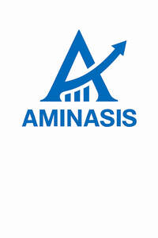

Trade Mark Journal No.2025/038 19 September 2025
UK00004250236 16 August 2025 (16,18,21)

- Class 16
- Ballpoint pens; Gel pens; Rollerball pens; Fountain pens; Pencils; Coloured pencils; Highlighter pens; Permanent markers; Whiteboard markers; Ink refills; Ink cartridges; Pencil cases; Notebooks; Diaries; Journals; Dated diaries; Sketchbooks; Sketch pads; Drawing pads; Notepads; Sticky notes; Memo pads; Refill pads; Pre-printed forms; Copy paper; Printer paper; Plain writing paper; Lined writing paper; Graph paper; Ring binders; Lever arch files; Folders; Document wallets; File dividers; Cardboard boxes; A4 notebooks; A5 notebooks; A4 writing pads; A5 writing pads; Envelopes; Mailing bags of paper; Adhesive tapes for stationery purposes; Packing tape for stationery purposes; Adhesive labels for stationery purposes; Shipping labels of paper; Staplers; Staples; Paper clips; Drawing pins; Paper cutters; Hole punches; Rulers; Erasers; Pencil sharpeners; Adhesive tape dispensers; Glue sticks for stationery and household purposes; Desktop organisers; Office trays; Calendars; Desk calendars; Bookmarkers; Name tag stickers; Stickers; Paintbrushes; Watercolour sets; Crayons; Art paper; Charcoal; Pastels; Plastic folders for stationery use; Photo albums; Posters; Invoice books; Receipt books; Cash memo pads; Instructional and teaching materials in printed form; Gift wrapping paper; Die-cut stickers; Paper tags; Reusable adhesive putty; Correction tape; Correction fluid; Page markers; Clipboard boards; Magnetic bookmarks Passport holders; Paper napkins; Leather blotting pads.
- Class 18
- Leather wallets; Synthetic leather wallets; Leather credit card holders; Card cases; Coin purses; Leather key cases; Handbags; Backpacks; Duffel bags; Travel bags sold empty; Shoulder bags; Crossbody bags; Cosmetic bags sold empty; Document cases of leather; Briefcases; Folio cases; Messenger bags; Leather wash bags sold empty; Travel organiser cases; Luggage tags; Luggage; Cabin bags; Carry-on bags; Trolley bags; Belts; Removable bag straps; Duffle bags; Leather weekender bags; Leather document wallets; Umbrellas; Umbrella covers; Walking sticks; Luggage covers; Luggage belts; Luggage locks; Shoe bags for travel; Sports bags; Picnic bags; Cosmetic carry cases; Evening bags; Holdalls; Recycled leather goods, namely wallets, bags and card holders; Flask holders; Leather notebook covers.
- Class 21
- Household and kitchen articles namely drinking bottles; Water bottles sold empty; Cups; Mugs; Travel mugs; Jars for household use; Food storage containers; Cereal dispensers; Plastic storage boxes for household use; Kitchen organiser trays; Kitchen storage canisters; Lunch boxes; Bento boxes; Sandwich boxes; Snack boxes; Microwave safe containers; Freezer boxes of plastic for household use; Dish covers; Manual juicers; Household kitchen scales; Pot lids; Mixing bowls; Salad bowls; Cake bowls; Serving trays for household purposes; Slotted spoons for kitchen use; Kitchen spatulas; Serving tongs; Stainless steel cooking utensils, namely turners, spatulas and ladles; Salad servers; Whisks; Pasta strainers; Chopsticks; Nail brushes; Dish brushes; Bathroom caddies; Toothbrush cases; Soap dishes; Soap dispensers; Dustpans; Cutting boards for the kitchen; Wine openers; Bottle openers; Food preservation containers for household use; Vacuum flasks; Aluminium foil food containers sold empty; Disposable food containers; Ice cube trays; Household gloves; Kitchen gloves; Scrubbing sponges; Baking trays; Cookie cutters; Kitchen utensil sets; Insulated bags for food and beverages; Dish drying racks; Refrigerator magnets; Microwave safe food covers; Decanters; Sauce bottles sold empty; Condiment dispensers; Refrigerator storage containers; Cake tins; Pepper mills; Plates and bowls; Lunch bags insulated for food and beverages; Cleaning cloths; Bathroom organiser boxes; Tea infusers; Cork boards.
Aminasis Global Ltd